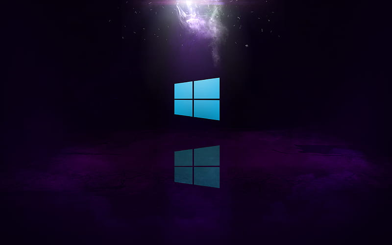
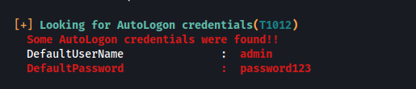
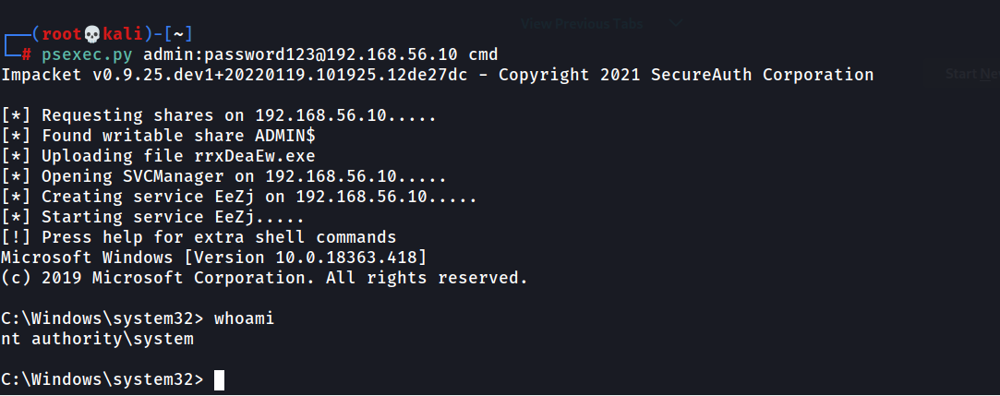

Introduction
In this article, we will cover how to escalate privileges on a Windows system using Stored Credentials -- Part 2. If you would like to see Part 1, check out the previous article in this series.
Let us first understand the technique before applying it. Windows allows you to enable automatic login after the system boots, so that a user is logged in automatically without being prompted for a password. While this feature is convenient, it introduces a security risk: the user's password gets stored in the Windows registry.
In the scenario we are going to walk through, we will retrieve the password stored in the registry at the following path:
HKLM\SOFTWARE\Microsoft\Windows NT\CurrentVersion\Winlogon
This is where Windows stores the credentials for automatic login, including the username and password in plaintext.
Walkthrough
Step 1: Initial Access
As usual, we start with a limited-privilege user account on the target system (the user account).

Step 2: Enumeration with WinPEAS
We transfer WinPEAS to the compromised system, as we have explained in previous parts of this series. After running WinPEAS, we review the results together.
WinPEAS discovers the administrator's password. This is because the administrator has enabled the auto-login feature, which means their password is stored in plaintext in the registry at:
HKLM\SOFTWARE\Microsoft\Windows NT\CurrentVersion\Winlogon
We can also query this manually using the following command:
reg query "HKLM\SOFTWARE\Microsoft\Windows NT\CurrentVersion\Winlogon" /v DefaultPassword

Step 3: Scanning for Open Ports
Now that we have the admin credentials, we need a way to authenticate as the administrator. We run an Nmap scan to check whether SMB (port 445) or RDP (port 3389) is open:
nmap -p 445,3389 <target-ip>
The scan shows that SMB (port 445) is open.

Step 4: Gaining an Admin Shell with psexec.py
Now we use psexec.py from the Impacket suite (available on GitHub). We provide the tool with the target IP, the admin username, and the admin password that we discovered. The tool uploads a malicious service binary over SMB and opens a command shell with administrator privileges:
psexec.py admin:<password>@<target-ip> cmd
Replace <password> with the actual password retrieved from the registry and <target-ip> with the IP address of the compromised machine.

Result
We have successfully obtained the highest privilege level on the system by exploiting the Windows auto-login feature. When auto-login is enabled, the user's password is stored in plaintext in the registry, making it trivially accessible to anyone with local access to the system -- even a low-privileged user. Combined with an open SMB port and psexec.py, this leads to full administrative compromise.
